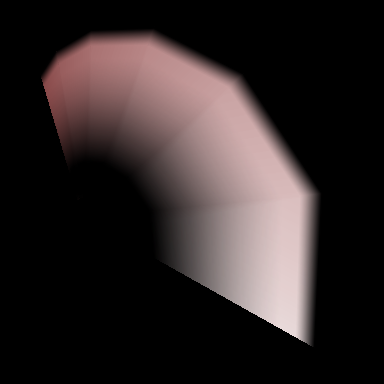

描画-軌跡¶
概要¶
描画の設定で、「軌跡」を選択した場合の描画及びパラメーターについて説明します。
「軌跡」を選択すると、連続的に繋がった軌跡上のエフェクトが描画されます。
軌跡は、パーティクルごとで描画するのではなく、あるパーティクルの子全てを繋げて描画します。 例えばパーティクル0の子のパーティクル1,2,3と存在すると、1,2,3の間で軌跡を引いた様な形状が描画されます。軌跡は各パーティクルの間の線を繋げたような形状になります。リボンと違う点は、リボンはパーティクルの回転や拡大に影響されましたが、軌跡の場合はそれらに影響されず、常にカメラの方を向くようになっています。

パラメーター¶
「描画」ウインドウ
UV タイプ¶
UVの繰り返しパターンを設定します。
ストレッチ¶
軌跡全体で1つの画像を使用します。レーザーなど、1枚の画像が長く表示される表現に適しています。
タイル¶
1つの軌跡内で1枚の画像を繰り返します。鎖などの繰り返しパターンがある表現に適しています。 端のみを繰り返さない設定もあります。ループ領域を指定した範囲のみを繰り返します。
スムージング¶
急に折れ曲がった部分等でもスムーズにするか、設定します。
色の時間の取得元¶
時間を用いてUVや色を取得する際に、どの要素から時間を取得するか選択します。
グループ¶
軌跡のパーティクル全体の生存した時間を使用します。
最初のパーティクル¶
先頭のパーティクル時間を使用します。 主に過去のバージョンとの互換性のために残されています。
スプラインの分割数¶
軌跡を細かく分割して形状を滑らかにします。見た目は綺麗になりますが、処理は重くなります。
分割数 : 1 | 分割数 : 8 |
|  |  |
幅・前方¶
軌跡の前方の幅を指定します。
幅・中間¶
軌跡の中間の幅を指定します。
幅・後方¶
軌跡の後方の幅を指定します。
色・左¶
軌跡の左前と左後ろの色を指定します。
色・左中間¶
軌跡の左中間の色を指定します。
色・中央¶
軌跡の中央前と中央後ろの色を指定します。
色・中央中間¶
軌跡の中央中間の色を指定します。
色・右¶
軌跡の右前と右後ろの色を指定します。
色・右中間¶
軌跡の右中間の色を指定します。